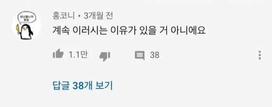
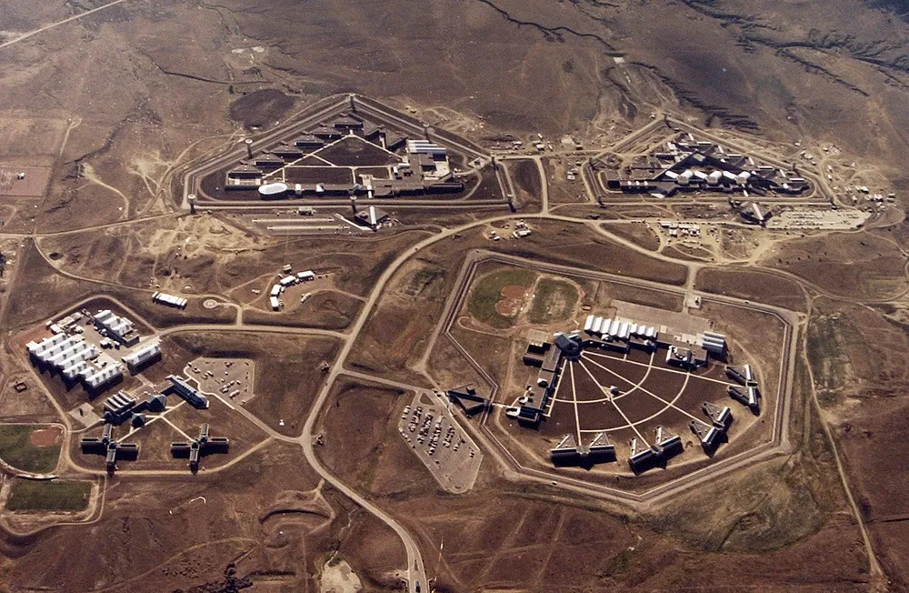

는 미국 FBI의 요원 로버트 핸슨.
우선 이 양반은 FBI의 방첩 부서 책임자였는데
이 양반이 재직하던 1979년부터 2001년까지
미국의 국가기밀을 전부 소련, 러시아에다가 갖다 바쳐버렸다.
그 중 대표적인 기밀로는 미국으로 망명한 KGB 요원들의 신상정보,
미국의 핵전쟁 대응전략,
미국의 대 소련 방첩 계획 등이 있었으며
2001년 2월 트롤짓이 발각되고 나서 FBI가 내부 단속을 하느라
9.11 테러를 제대로 파악하지 못하게 하는 근본적인 원인까지 제공했다.

이 새끼가 왜 그랬는지를 알아보면 더 가관인게,
얘는 애초부터 소련에 대한 충성이나 공산주의 대한 호감 뭐 그딴 것도 아니고
순전히 자신이 "이중간첩 노릇을 하는 쾌감"에 도취해있었다고 한다.
그가 체포되고 난 이후 미국 법무부는 그의 범행 동기를 크게 두가지로 잡았는데
1. 스파이가 되고싶은 욕구
핸슨은 낮은 자존감과 동시에 자신의 지적 우월성을 증명하고 싶어했고,
어릴 때 부터 첩보 활동에 대한 매력,
그리고 자신이 이 첩보전에서 중요한 역할을 하고싶다는 욕망이 가득했다고 한다.
즉, CIA처럼 나서서 뭔가 해보고 싶은데
정작 본인은 FBI라 그런 일을 할만한 기회도 없었고
그래서 내부 첩자 노릇을 했다는 것.
2. 돈
물론 핸슨이 돈을 안받았던 것은 아니다.
뉴욕 지부에서 일하면서 집세도 내야했고, 양육비도 내야했던 그는
소련으로부터 총 140만 달러를 받아냈다.
게다가 이 새끼는 공산주의자도 아니었다.
오히려 반공주의자에 가까운 성향이었고,
독실한 가톨릭 신자이기까지 했다.
그런 코스프레를 했다는게 아니라,
진심으로 반공주의자였고, 가톨릭 신자였음에도
꼴랑 그 관종욕구 때문에 소련에다가 정보를 팔아넘긴 것.
그리고 FBI는 병신마냥 이 요원의 정체도 파악하지 못하고 있다가
CIA가 러시아의 정보를 분석하던 와중에 발견해냈다.
물론 당시에는 CIA와 FBI가 사이가 좋지 않아서 그런 것일수도 있겠지만
어떻게 지들 스파이가 날뛰는걸 다른 조직이 알아내기 전까지 모를 수 있단 말인가.
2001년 핸슨은 결국 체포되었다.

체포된 핸슨은 미국 사막 한가운데 있는 ADX 플로렌스 교도소에서 종신형을 살다가 2023년 6월에 사망한다.
공산주의에 감회된 것도 아니고
그렇다고 미국에 대한 적개심이 있던 것도 아니었던
개 병신 관종새끼의 트롤짓이 얼마나 위험한지 보여주는 사례가 되면서 말이다.
이거 무슨 영화스토리랑 비슷하네ㄷㄷ